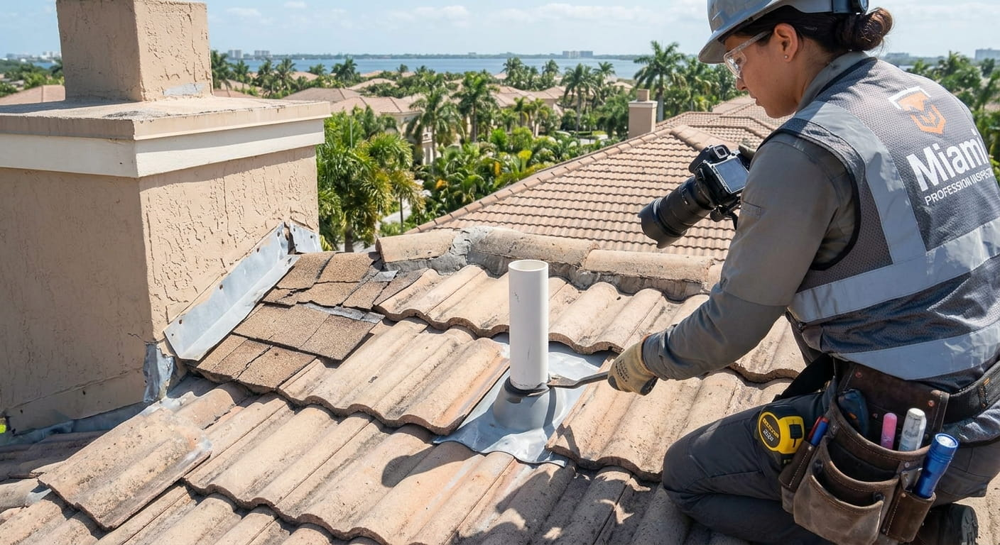

Roof Inspection in Miami: What Homeowners Should Know
A roof inspection is more useful when it answers a homeowner's real questions: Where is the roof vulnerable, what caused the problem, how serious is it, and what should happen next? In Miami, those questions matter because intense sun, heavy rain, humidity and tropical weather can expose weaknesses that are easy to miss from the ground.
An inspection does not automatically mean a roof needs to be replaced. In many cases, the value is in separating an isolated repair from a broader roofing-system problem. That distinction can help a homeowner avoid both unnecessary work and the risk of postponing a problem that is getting worse.
What a Miami roof inspection should actually accomplish
A useful inspection should look beyond the single spot where a homeowner noticed a leak. The visible symptom may be several feet away from the actual entry point for water, and a roof can have developing problems that have not yet produced an interior stain.
A roofing professional may examine the roof covering, flashing, penetrations, drainage areas, visible signs of water intrusion, deteriorated materials and other components that affect performance. Depending on the property and the purpose of the inspection, the evaluation may also consider the roof's age, previous repairs, storm exposure and general installation condition.
The goal is not simply to produce a list of defects. The useful outcome is an explanation of which findings are minor, which require prompt attention, and which indicate that the roof should be evaluated as a complete system.
When should you schedule a roof inspection?
Homeowners often wait for a leak before arranging an inspection, but that is not the only reason to have the roof evaluated. An inspection can be sensible when a roof is approaching an important maintenance or replacement decision, after significant weather, before buying or selling a property, or when a homeowner notices changes such as missing materials, damaged flashing, recurring stains or unusual water marks.
After a severe storm, the reason for inspecting is particularly straightforward: some damage is difficult to see safely from the ground. Wind can displace materials without creating an immediate ceiling stain, while wind-driven rain can exploit small openings around roof penetrations and flashing.
Florida's Hurricane Retrofit Guide recommends evaluating the roof covering as well as other parts of the roof system when considering hurricane resistance. Review the official Florida roof guidance for more detail.
What should an inspector look for?
The exact inspection varies by roof type, but the process should be systematic. The roof covering is an obvious starting point, yet it is only one layer of the system. Flashing at walls, valleys and penetrations can be important because these transition points are common locations for water entry. Drainage matters because standing or poorly managed water can create repeated stress on a roof.
The inspector should also pay attention to signs that the roof has experienced previous repairs. A roof with many patches may not be failing everywhere, but the pattern can tell a homeowner that the system deserves a broader evaluation instead of another isolated repair.
For homeowners interested in the service itself, the site's Miami roof inspection service page explains how inspection-related roofing help fits into the larger process.
Inspection findings: repair, maintenance or replacement?
The most important part of an inspection is often what happens after the findings are explained. A localized issue on an otherwise healthy roof may point toward repair. A roof with recurring leaks, widespread deterioration or extensive storm damage may require a much larger scope.
Age should be considered, but it should not be used as a substitute for condition. Two roofs of the same age can perform very differently because of material, installation, weather exposure and maintenance history. Likewise, a visually unattractive roof is not automatically a failed roof.
Our guide on how to tell if you need a new roof explores the signs that can push the decision toward replacement, while Miami roof repair covers common repair situations.
What changes after storm damage?
After a hurricane or severe thunderstorm, the inspection should be approached as a damage assessment rather than a routine maintenance check. Homeowners should avoid climbing onto a damaged roof and instead document visible conditions from a safe location when possible.
If you find missing or displaced roofing materials, visible openings, fallen branches, interior water intrusion or other storm-related damage, arrange a professional evaluation. Our related guides on storm damage roof repair and hurricane roof damage in Miami explain the next steps in more detail.
Questions to ask after the inspection
Do not be afraid to ask for the reasoning behind a recommendation. A homeowner should be able to understand what was observed and why the proposed work is appropriate.
Ask where the damage is located, whether it is isolated or widespread, whether there are signs of previous repairs, what happens if the work is delayed, and whether repair or replacement is being recommended. If replacement is proposed, ask what condition the underlying components are in and what scope is included in the written estimate.
For Miami-Dade properties, also ask whether permits or other local requirements apply. The county publishes current roofing permit information, while Florida publishes the current Florida Building Code resources.
How an inspection can prevent expensive surprises
The purpose of an inspection is not to create a bigger project. It is to improve the quality of the decision. If the roof only needs a targeted repair, the homeowner can understand why. If replacement is justified, the homeowner can approach the project knowing that the recommendation is based on observed conditions rather than a generic sales pitch.
That makes an inspection particularly useful before comparing estimates. Instead of asking only, “Who is cheapest?”, the homeowner can ask whether each contractor is proposing the same scope and addressing the same underlying problems.
Miami roof inspection: the practical takeaway
A roof inspection is most valuable when it gives you a clear explanation of the roof's condition and the options available. Miami's climate makes regular attention worthwhile, while storm exposure makes post-weather evaluation especially important.
If you are unsure whether your roof needs a repair, maintenance work or replacement, start with an inspection and use the findings to guide the next decision. You can also continue through the Miami roofing resource center for information on permits, storms, repairs and replacement.
View Contact StatusSources and further reading
Related Miami roofing guides
Roof replacement cost · What to do when a roof leaks · How often to inspect a Florida roof · More roofing advice